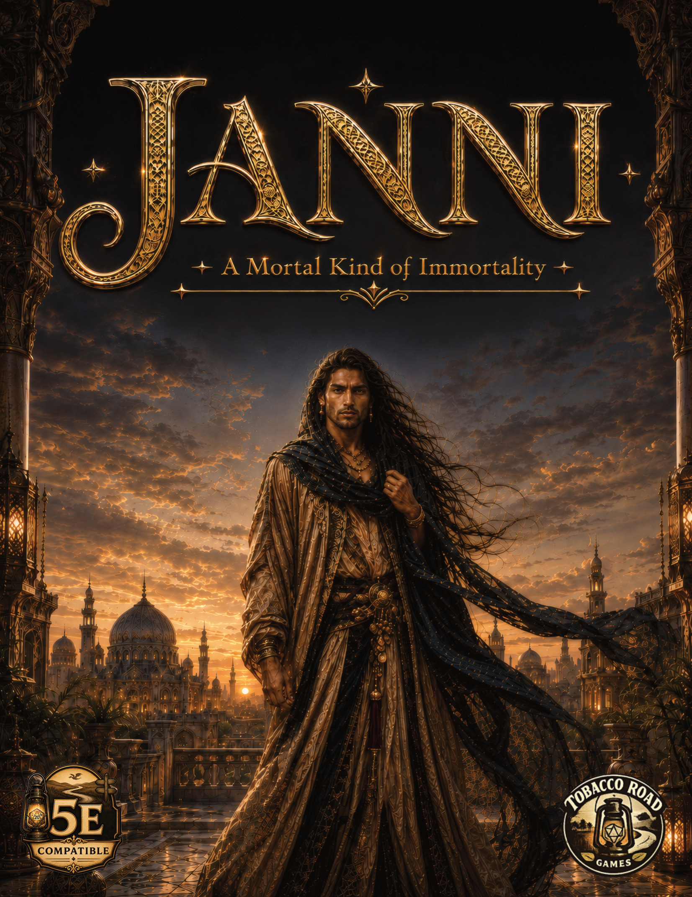
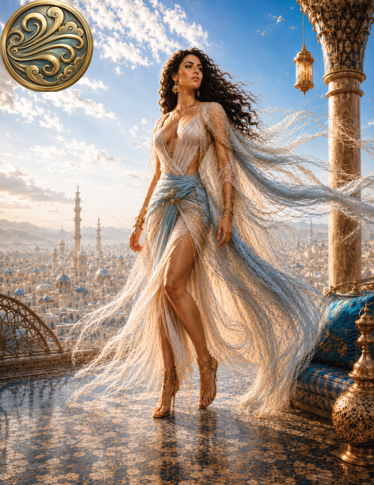
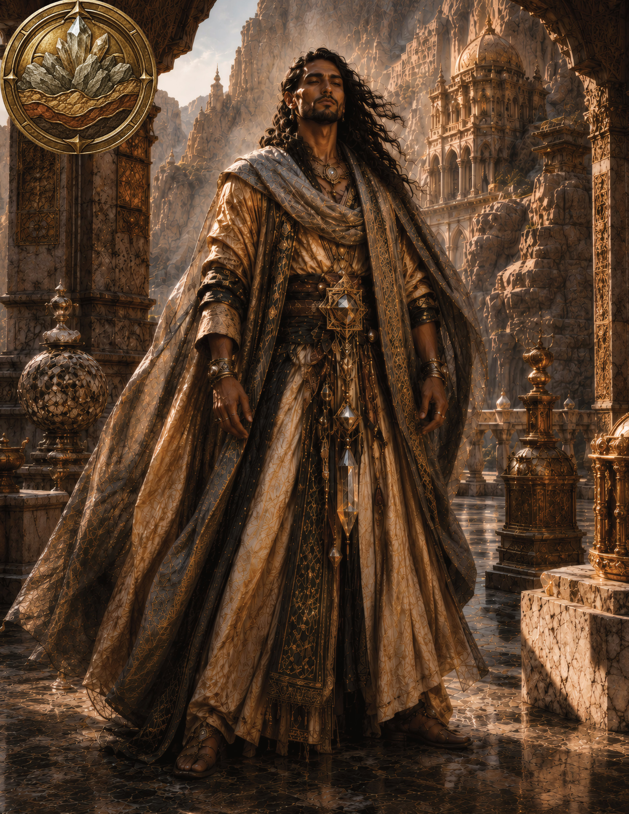
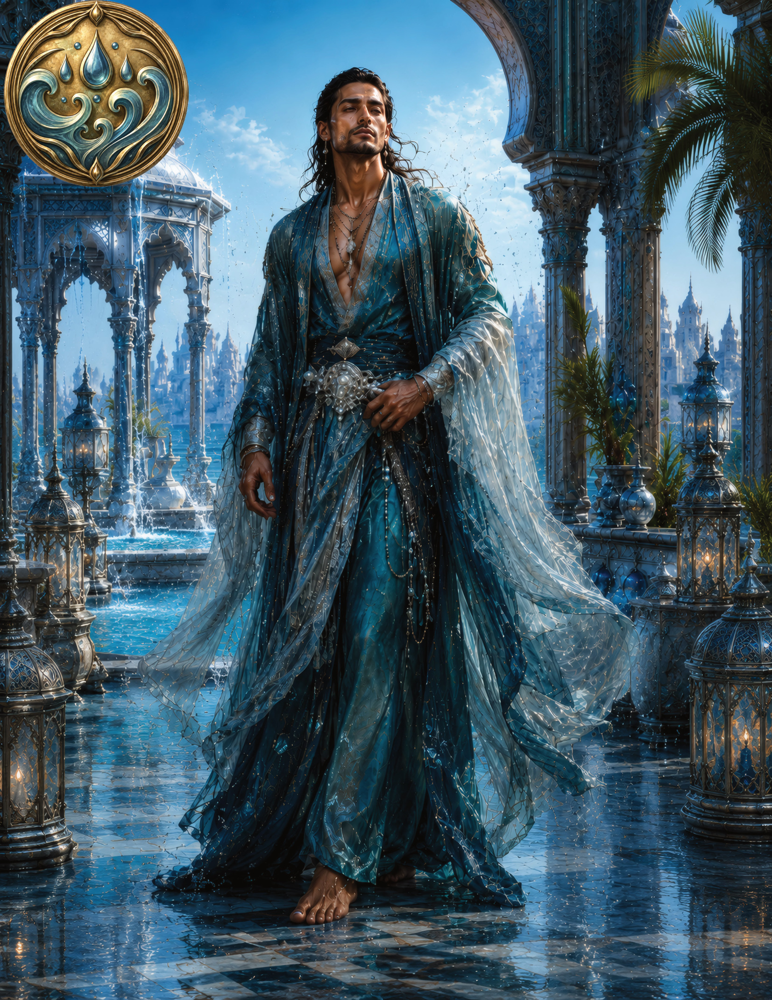
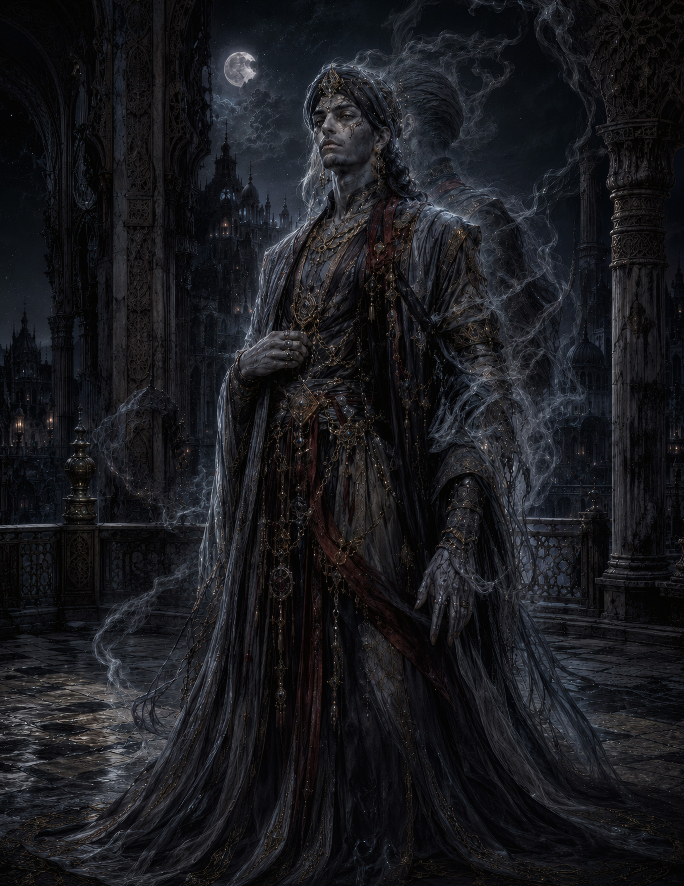

A child of two worlds
Mortal flesh.
Jinn blood.

Heritage I
Air
Cold resistance

Heritage II
Earth
Lightning resistance
Heritage III
Fire
Fire resistance

Heritage IV
Water
Acid resistance

The Country of the Ghuul
Age cannot claim them.
Death can.
The price of return
Some return.
Every return has a price.
−2 permanent Constitution

Tobacco Road Games presents
Janni
A Mortal Kind of Immortality
5E-compatible player ancestry